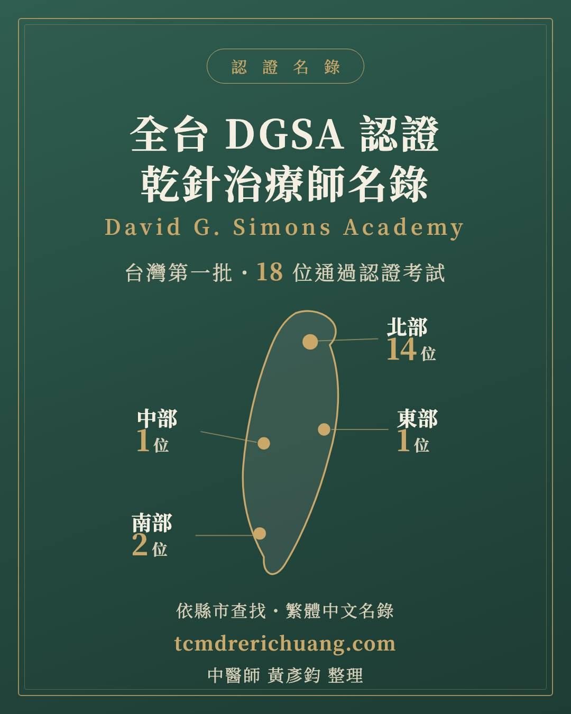

認證名錄
全台 DGSA 認證乾針治療師名錄
乾針治療的品質，取決於執行者對解剖的掌握、觸診的精準與對病人安全的判斷。這裡整理台灣通過 DGSA（David G. Simons Academy）乾針認證考試的治療師，依縣市編排，讓各地民眾能就近找到通過認證考試的執行者。
本名錄僅陳列「通過 DGSA 乾針認證考試」的公開事實，每筆列名皆經本人同意；認證資格可至 DGSA 官方名錄（國家選擇 Taiwan）查證。乾針為侵入性醫療行為，應由具合格醫事資格者執行。

關於 DGSA
DGSA 是以《Myofascial Pain and Dysfunction: The Trigger Point Manual》（中譯《激痛點手冊》）共同作者 David G. Simons 醫師命名的國際學院，長年深耕乾針與徒手激痛點治療的專業訓練。從基礎徒手課程、臨床常用肌群，到上肢、下肢與中軸的進階課程，完整走完整個系列之後，才有資格站上認證考試的關卡。
2026 年 8 月，台灣誕生了第一批通過認證考試的乾針治療師。名錄中的每一位，都通過了同一場檢驗。
依縣市查找
依北、中、南、東四區編排；同區之內，依姓氏筆畫排序。
北部
台北市・新北市・基隆市・桃園市・新竹縣市・宜蘭縣
- 江文昕（Chiang Wen Shin）中醫師｜泰昌堂中醫診所（台北市）
- 江忠軒（Chiang Chung Hsuan）中醫師｜斯林中醫診所（台北市）
- 江時宇（Chiang Shih Yu）中醫師｜建榮中醫診所（台北市）
- 沈冠霖（Shen Kuan Lin）中醫師｜至善醫坊中醫診所（台北市）
- 林宛儀（Lin Wan Yi）中醫師｜基隆長庚紀念醫院（基隆市）
- 林庭安（Lin Ting An）中醫師｜詠樂中醫診所（台北市）
- 夏正昀（Hsia Cheng Yun）中醫師｜聯新國際醫院桃園分院運動醫學科（桃園市）
- 馬崧鈞（Ma Song Chun）中醫師｜安一杏子中醫診所（基隆市）
- 陳冠宇（Chen Kuan Yu）中醫師｜君綺中醫診所・東門中醫診所・璽悅中醫診所（台北市）
- 陳韋閔（Chen Wei Min）中醫師｜木林中醫診所（台北市）
- 曾子維（Tseng Tzu Wei）中醫師｜沐禾中醫診所（宜蘭縣）
- 黃彥鈞（Huang Yan Jyun）中醫師｜太初中醫診所・東門中醫診所（台北市）
- 褚衍強（Chu Yen Chiang）中醫師｜初蘊中醫診所（台北市）
- 謝彌堅（Hsieh Mi Chien）中醫師｜君綺中醫診所・東門中醫診所（台北市）
中部
台中市・彰化縣・南投縣・苗栗縣・雲林縣
- 洪學宇（Hung Shiue Yu）醫師｜台中慈濟醫院復健科（台中市）
南部
嘉義縣市・台南市・高雄市・屏東縣
- 邱莉涵（Chiu Li Han）中醫師｜博愛馬光中醫婦幼診所（高雄市）
- 陳彥都（Chen Yan Du）中醫師｜禾本中醫診所（台南市）
東部與離島
花蓮縣・台東縣・澎湖縣・金門縣・連江縣
- 張皓淼（Chang Hao Miao）中醫師｜江瑞庭中醫診所（花蓮縣）
名錄隨各批次認證放榜持續更新。
本頁由黃彥鈞中醫師整理維護，資料以 DGSA 官方名錄為準；列名者可隨時來訊修改或下架資訊。本頁不涉及任何療效保證或商業推薦。